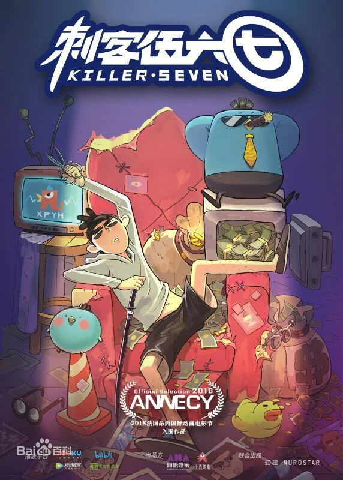
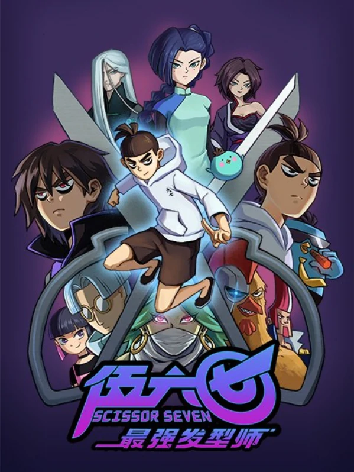

-

Saison 1
La saison 1 de Scissor Seven s'est déroulée à l'origine du 25 avril 2018 au 20 juin 2018 en Chine, et est sortie d'un seul coup le 10 janvier 2020 sur Netflix avec les doublages originaux en mandarin, anglais, japonais, français et espagnol. Il s'agit d'une courte série d'animation de 10 épisodes (voir liste) qui a été la première œuvre de Sharefun Studio. Elle suit le personnage principal Sept, dont l'objectif est de se faire un nom en tant qu'assassin le plus fort de Chicken Island tout en doublant son rôle de coiffeur. La première saison est suivie de 4 OVA en bonus.
-

Saison 2
La saison 2 de Scissor Seven est la suite de la saison 1. Elle comporte 10 épisodes. Après l'invasion avortée de Stan sur l'île aux Poulets, les assassins de la Ligue des assassins commencent à cibler Seven et d'autres artistes martiaux puissants sur l'île pour l'envahir. De plus, le maître de Treize s'intéresse personnellement à l'assassinat de Sept.